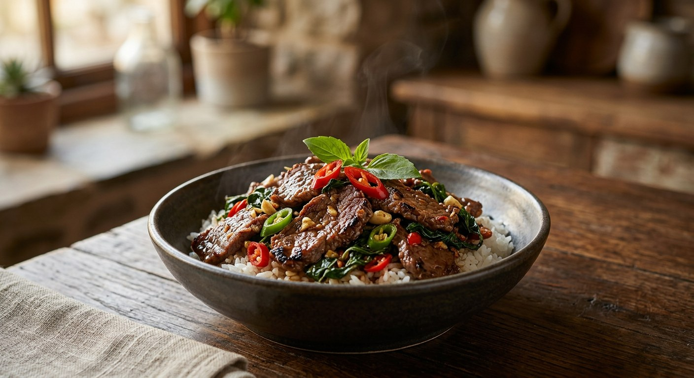

Beef, garlic and chillies fried fast over high heat, finished with holy basil — the dish Thailand orders when it cannot decide, and the one it never gets tired of.

ผัดกะเพรา is the country's fallback order — the author of one Kapook recipe puts it plainly: คิดอะไรไม่ออก ผลก็มาออกที่เมนูผัดกะเพรา, when you cannot think of anything, the answer comes out as pad krapow. The dish is named for its leaf: กะเพรา, holy basil, whose clove-and-pepper aroma is the whole point. Swap in sweet basil and it is a different dish, the same shape but none of the smell. The beef version, ผัดกะเพราเนื้อ, is the richer sibling of the usual pork or chicken — darker, beefier, and the one the chefs treat as a showcase.
The cult extremes show how far a "simple" stir-fry goes. The Bangkok restaurant Phat Kaphrao World Champ (ผัดกะเพราแชมป์โลก) publishes its kitchen recipe openly: minced beef dry-fried in its own fat with no oil at all, the rendered fat spooned off, four different chillies in the paste, and a homemade beef-stock sauce simmered from beef bones, coriander root, dried bonito and seaweed for up to twelve hours. At the other pole, Chef Thanakorn Ployseechomphu of Phol Food Mafia keeps it short and sharp — pasture-raised Thai beef (โคขุน) sliced slightly thick, green and red jinda chillies, red holy basil, ten minutes from pan to plate.
The technique underneath is constant across all six sources. The garlic and chillies are pounded or chopped, fried until the kitchen smells of them, and the beef goes in hard and fast. The seasoning is fish sauce, oyster sauce and seasoning sauce with at most a pinch of sugar — sometimes a splash of water for a glistening sauce, sometimes none at all for the dry style. The holy basil goes in last, and the pan leaves the heat the moment it wilts. Over hot rice, with a crispy fried egg (ไข่ดาวกรอบ) if you are doing it right.
| Thai | English | Amount |
|---|---|---|
| กระเทียม | Garlic | 3 cloves |
| พริกจินดาเขียว | Green jinda chillies | 12 |
| พริกจินดาแดง | Red jinda chillies | 4 |
| เนื้อสะโพกโคขุน | Beef sirloin (pasture-raised) | 250 g |
| น้ำมันรำข้าว | Rice bran oil | 2 tbsp |
| ซอสหอยนางรม | Oyster sauce | 1½ tbsp |
| น้ำปลา | Fish sauce | 2 tsp |
| น้ำตาลทราย | Sugar | ½ tsp |
| น้ำสะอาด | Water | ¼ cup |
| ซอสปรุงรส | Seasoning sauce | 1 tsp |
| ใบกะเพราแดง | Red holy basil | ½ cup |
The competition version (Phat Kaphrao World Champ): 400 g minced beef dry-fried with no oil, the rendered fat spooned off; a pounded paste of 40 g Thai garlic with yellow spur, bird's eye, Karen and dried jinda chillies plus fresh green peppercorns and a pinch of holy basil flowers; then 10 g seasoning sauce, 10 g beef stock sauce, 10 g oyster sauce, 10 g sugar, 8 g Golden Mountain, 6 g fish sauce and 2 g dark soy, basil tossed in at the end. The dried-chilli version (Wongnai): 250 g sliced beef, chopped garlic and dried chillies fried until the garlic turns translucent, seasoned with oyster sauce, seasoning sauce and fish sauce — no sugar, no water. The home minced version (Kapook, Pantip): garlic, bird's eye chillies and peppercorns pounded coarse; fish sauce, oyster sauce, sweet dark soy, a little sugar and a splash of water; finished with plenty of basil and a crispy fried egg.
Minced or sliced. Four of the six sources — the champ restaurant and all three Kapook recipes — use minced beef. Wongnai slices it thin, and Phol slices it slightly thick, deliberately, so the beef does not dry out. Both readings are authentic; it is the same dish with a different cut.
Dry or glistening. The champ recipe and Kapook's dry version add no water at all — the champ goes further and uses no oil, rendering the beef's own fat and spooning it off. Phol adds a quarter cup of water, and both Kapook home versions add a splash, for the glistening sauce (น้ำขลุกขลิก) that clings to the rice.
Peppercorns. Kapook's peppercorn recipe pounds fresh peppercorns into the chilli-garlic paste, and the champ's paste includes fresh green peppercorns. Wongnai, Phol and the sauce recipe leave them out entirely.
Sugar. The champ uses a full 10 g — the sweetest of the lot; Phol uses half a teaspoon; the peppercorn recipe uses a little; Wongnai's dried-chilli version uses none, seasoning with oyster sauce, seasoning sauce and fish sauce alone.
The egg. Kapook's dry recipe and peppercorn recipe crown the plate with a crispy fried egg (ไข่ดาวกรอบ). The other four sources serve the stir-fry without one.
This recipe is translated from the following Thai-language sources. Where they disagree, we've said so.
1. Phol Food Mafia — "ผัดกะเพราโคขุน (Stir-fried Beef with Holy Basil)" by Chef Thanakorn Ployseechomphu (the recipe used here) — pholfoodmafia.com
2. Phat Kaphrao World Champ (ผัดกะเพราแชมป์โลก) — "แจกสูตร" official recipe (the competition version) — phatkaphrao-worldchamp.com
3. Wongnai — "สูตร ผัดกะเพราเนื้อสูตรพริกแห้ง" by MooAo (the dried-chilli version) — wongnai.com
4. Kapook — "ผัดกะเพราเนื้อสับ ผัดแบบแห้ง ๆ โปะไข่ดาวกรอบ อร่อยจัดจ้าน" (the dry version with crispy egg) — cooking.kapook.com
5. Kapook — "ผัดกะเพราเนื้อสับ สูตรหอมใบกะเพรา เผ็ดร้อนพริกไทย ทำง่าย อร่อยเข้มข้น" by Pantip user เที่ยวสบายสบาย (the home version with peppercorns) — cooking.kapook.com
6. Kapook — "ผัดกะเพราเนื้อสับ อาหารตามสั่งอร่อยแซ่บ พ่วงสูตรซอสผัดกะเพรา" by Pantip user Ananya Amy_1994 (the make-ahead sauce) — cooking.kapook.com